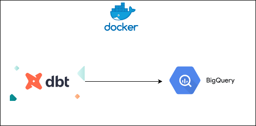
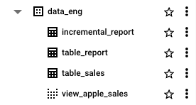
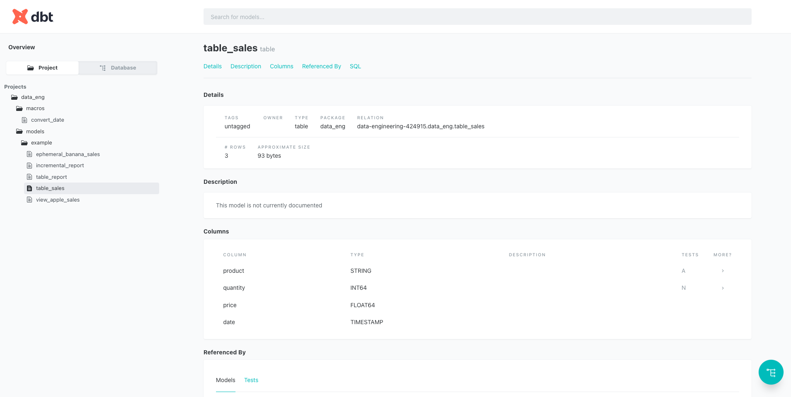

Running dbt and BigQuery using Docker#

must have
Before starting this project, you need to install some prerequisites in your laptop:
Interact with Google Cloud Platform#
-
Create your project, follow this guidances.
-
Enter your GCP console and go to BigQuery. You will find view as below, your [project name] is within the red box.

-
In your GCP project, create dataset name
data_eng. -
Go to your local terminal and run command below, it will redirect you to browser and login to your google account and create the credentials file to your laptop.
Credentials saved to file: [~/.config/gcloud/application_default_credentials.json]
- Done, your laptop is connected to GCP and you can connect it through container as well.
Build dbt docker image#
- clone the repo first, run this command
- update your dbt
profiles.ymlwith your GCP [project name]
data-eng:
target: dev
outputs:
dev:
type: bigquery
method: oauth
project: [project name]
dataset: "data_eng"
timeout_seconds: 300
location: US
priority: interactive
retries: 0
threads: 8
- make sure you are in
data-engineering directory, then run this command
data-engineering git:(dq1) make build-dbt
Building dbt image
[+] Building 1.1s (9/9) FINISHED docker:desktop-linux
=> [internal] load build definition from Dockerfile 0.0s
=> => transferring dockerfile: 264B 0.0s
=> [internal] load metadata for docker.io/fishtownanalytics/dbt:1.0.0 1.0s
=> [internal] load .dockerignore 0.0s
=> => transferring context: 2B 0.0s
=> [1/4] FROM docker.io/fishtownanalytics/dbt:1.0.0@sha256:4c9462867d2db6869a0 0.0s
=> [internal] load build context 0.0s
=> => transferring context: 1.76kB 0.0s
=> CACHED [2/4] WORKDIR /dbt 0.0s
=> [3/4] COPY . /dbt/ 0.0s
=> [4/4] COPY profiles /root/.dbt 0.0s
=> exporting to image 0.0s
=> => exporting layers 0.0s
=> => writing image sha256:03631678cdc560b844f608519ac23cb15d37cab9099feb52075 0.0s
=> => naming to docker.io/library/dbt 0.0s
- if you see above image, then your dbt image is already built.
Run dbt image container interactively#
- run this command to execute dbt image and enter in
/bin/bashterminal,
Output:
data-engineering git:(dq1) make run-dbt
Running dbt in container
WARNING: The requested image's platform (linux/amd64) does not match the detected host platform (linux/arm64/v8) and no specific platform was requested
root@d94bac5d04ab:/dbt#
- run this command to execute
dbt runin FULL REFRESH mode.
Output:
root@d94bac5d04ab:/dbt# dbt run --full-refresh
17:25:54 Running with dbt=1.0.0
17:25:54 Partial parse save file not found. Starting full parse.
17:25:54 [WARNING]: Configuration paths exist in your dbt_project.yml file which do not apply to any resources.
There are 1 unused configuration paths:
- models.data-eng.example
17:25:54 Found 5 models, 2 tests, 0 snapshots, 0 analyses, 189 macros, 0 operations, 0 seed files, 0 sources, 0 exposures, 0 metrics
17:25:54
17:25:56 Concurrency: 8 threads (target='dev')
17:25:56
17:25:56 1 of 4 START table model data_eng.table_sales................................... [RUN]
17:26:00 1 of 4 OK created table model data_eng.table_sales.............................. [CREATE TABLE (3.0 rows, 0 processed) in 3.58s]
17:26:00 2 of 4 START incremental model data_eng.incremental_report...................... [RUN]
17:26:00 3 of 4 START table model data_eng.table_report.................................. [RUN]
17:26:00 4 of 4 START view model data_eng.view_apple_sales............................... [RUN]
17:26:02 4 of 4 OK created view model data_eng.view_apple_sales.......................... [OK in 1.84s]
17:26:03 2 of 4 OK created incremental model data_eng.incremental_report................. [CREATE TABLE (1.0 rows, 93.0 Bytes processed) in 3.26s]
17:26:04 3 of 4 OK created table model data_eng.table_report............................. [CREATE TABLE (1.0 rows, 93.0 Bytes processed) in 3.78s]
17:26:04
17:26:04 Finished running 2 table models, 1 view model, 1 incremental model in 9.47s.
17:26:04
17:26:04 Completed successfully
17:26:04
17:26:04 Done. PASS=4 WARN=0 ERROR=0 SKIP=0 TOTAL=4
-
your models have been run based on the dependencies and SQL models.
-
you can check in the BigQuery UI for the created tables.

Check dbt docs and DAG#
- Inside your container, in your terminal, run this command to compile dbt models, etc
Output:
root@d94bac5d04ab:/dbt# dbt compile --target dev
17:27:26 Running with dbt=1.0.0
17:27:26 Unable to do partial parsing because config vars, config profile, or config target have changed
17:27:27 [WARNING]: Configuration paths exist in your dbt_project.yml file which do not apply to any resources.
There are 1 unused configuration paths:
- models.data-eng.example
17:27:27 Found 5 models, 2 tests, 0 snapshots, 0 analyses, 189 macros, 0 operations, 0 seed files, 0 sources, 0 exposures, 0 metrics
17:27:27
17:27:28 Concurrency: 8 threads (target='dev')
17:27:28
17:27:28 Done.
- run this command to generate docs.
Output:
root@d94bac5d04ab:/dbt# dbt docs generate --target dev
17:27:48 Running with dbt=1.0.0
17:27:48 [WARNING]: Configuration paths exist in your dbt_project.yml file which do not apply to any resources.
There are 1 unused configuration paths:
- models.data-eng.example
17:27:48 Found 5 models, 2 tests, 0 snapshots, 0 analyses, 189 macros, 0 operations, 0 seed files, 0 sources, 0 exposures, 0 metrics
17:27:48
17:27:49 Concurrency: 8 threads (target='dev')
17:27:49
17:27:49 Done.
17:27:49 Building catalog
17:27:53 Catalog written to /dbt/target/catalog.json
- run this command to serve the docs into UI.
Output:
root@d94bac5d04ab:/dbt# dbt docs serve --target dev
17:28:13 Running with dbt=1.0.0
17:28:13 Serving docs at 0.0.0.0:8080
17:28:13 To access from your browser, navigate to: http://localhost:8080
17:28:13
17:28:13
17:28:13 Press Ctrl+C to exit.
- the UI is accessible in port
8080inside the container, but in my Makefile, I redirect it to port8082, then you can access it in http://localhost:8082 through your browser.
run-dbt:
@echo "Running dbt in container"
@docker run \
-e DESTINATION=${USER} \
-e DBT_ENV=dev \
--rm \
-v ${GCP_AUTH}:/creds -it \
--entrypoint /bin/bash \
-p 8082:8080 \
dbt
- you can see the DAG lineage through the URL as below

and you can also see each of dbt models informations, such as: details, descriptions, column and code.

Testing data quality#
- to perform data quality check on dbt, written in
schema.yml
version: 2
models:
- name: table_sales
columns:
- name: quantity
tests:
- not_null
- name: product
tests:
- accepted_values:
values: ["apple", "pear", "banana"]
run this
Output:
root@167804cf135d:/dbt# dbt test
05:11:38 Running with dbt=1.0.0
05:11:38 Partial parse save file not found. Starting full parse.
05:11:39 [WARNING]: Configuration paths exist in your dbt_project.yml file which do not apply to any resources.
There are 1 unused configuration paths:
- models.data-eng.example
05:11:39 Found 5 models, 2 tests, 0 snapshots, 0 analyses, 189 macros, 0 operations, 0 seed files, 0 sources, 0 exposures, 0 metrics
05:11:39
05:11:40 Concurrency: 8 threads (target='dev')
05:11:40
05:11:40 1 of 2 START test accepted_values_table_sales_product__apple__pear__banana...... [RUN]
05:11:40 2 of 2 START test not_null_table_sales_quantity................................. [RUN]
05:11:42 2 of 2 PASS not_null_table_sales_quantity....................................... [PASS in 1.75s]
05:11:42 1 of 2 PASS accepted_values_table_sales_product__apple__pear__banana............ [PASS in 1.96s]
05:11:42
05:11:42 Finished running 2 tests in 3.21s.
05:11:42
05:11:42 Completed successfully
05:11:42
05:11:42 Done. PASS=2 WARN=0 ERROR=0 SKIP=0 TOTAL=2